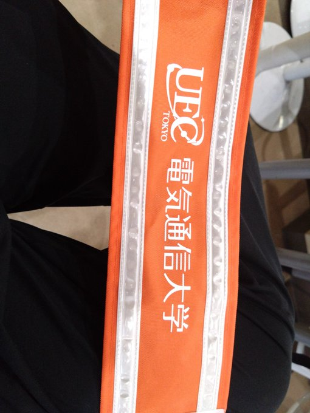
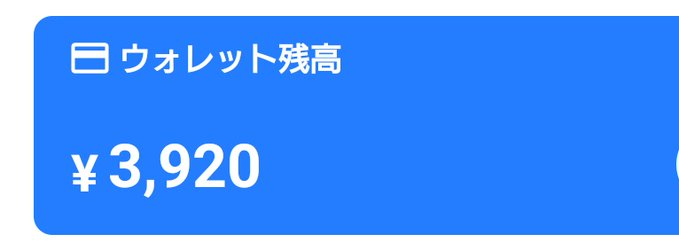

電気通信大学Ⅲ類学域二年の一般生徒 趣味はゲーム 最近はBeat mania IIDX(弐寺)に熱狂 みんなも音ゲーやろう!!
Twitter(現X)
電気通信大学Ⅲ類学域二年の一般生徒 趣味はゲーム 最近はBeat mania IIDX(弐寺)に熱狂 みんなも音ゲーやろう!!
Twitter(現X)


始めてバイトをしてみた話
2024/08/11 公開
人生で初めてバイトをしてきた
言ってしまえばそれだけの話だが、せっかくなので感想などを述べていこうかなと思う
人生初と言ってるが、今年の5月ぐらいに大学で行われた健康診断の学生バイトを行ってたりする (実際このバイトはかなり甘く、突っ立って健診が終わった人を「こちらへどうぞー」と言っていればいい さらに3.0hの契約であったけど、1.5hで終わって3600円ももらってしまったあまりにも割のいいバイトであった、まあ一般社会で働くのが初ということで)
図1 これは電気通信大学で働いたときの画像、実際待機時間20~30分ぐらいあった。
私が選んだのは簡単に言えば8kg前後の荷物(スーパーなどで出る商品)を台車に載せて、指定の場所にもっていく仕事であった 話だけ聞くと簡単そうではあるが、実際簡単ではあった(身体が泣いてるけど)。言われたままにやればいいので、飲食や接客のような理不尽なクレームなどがない。 また午前の三時間だけなので、結構気楽に行ける。(難点は募集人数が少なすぎることか) とまあ割といいバイトかなあと思った。運動不足解消にもなるし、家で午前中寝て過ごしてー なるよりかは、朝早く起きてバイトに行って家の電気代節約どころか稼いで来れるから割といい。
とまあ私の人生初のバイトは幕を閉じた。給料は3.5h働いたので3920円だった。...神奈川県の最低賃金が1,112円[1]であることを考慮するとまあ最低賃金すれすれであるが、 寝てスマホ見て時間をつぶすよりかは何倍も有意義だなあと思った。身体は泣くけど。
図2 3920円 金の重みを知れたと思う
働いて思ったのは、1000円という金の重みを知った。そりゃあ利根川*1もああやっていうのもよくわかる。
そういえば神奈川県の最低賃金が10月から50円上がるらしい。やったね!
*1 利根川 カイジに出てくるキャラ。金は命よりも重いといった人。
参考文献
[1] 厚生労働省,最低賃金のお知らせ https://jsite.mhlw.go.jp/kanagawa-roudoukyoku/hourei_seido_tetsuzuki/saiteichingin_chinginseido/saichin.html最終閲覧日2024/08/11